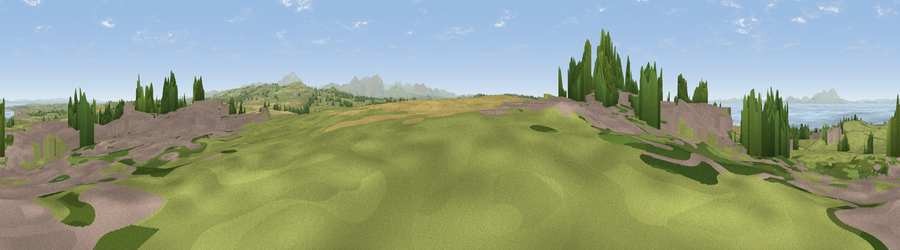

Viewpoint near Crosby
#8333 in England · top 53% of its area beats it · near Crosby · access?Where it is
The exact computed spot (NY 07525 38375). Click the marker for map links.
Public access: no public right of way or access land is recorded at this exact spot — it may be on private land. Computed from Natural England's CRoW access layer and OpenStreetMap rights of way — not the legal definitive map. Always verify locally.
The view, rendered

A 360° render of this exact spot computed from the terrain model, tree cover and land cover — summer colours, afternoon light, calibrated against photographs of famous viewpoints. Real trees, hedges and buildings will differ in detail.
The panorama
Grey silhouette: terrain skyline in each direction (720 bearings, Earth curvature and refraction included). Dashed green: skyline with trees (+15 m) and buildings (+8 m) as obstacles. Blue strip: how far the ground is visible on each bearing.
Where the view opens
Wedge length = distance to the farthest visible ground on that bearing (vegetation-aware). Rings at 10, 25 and 50 km.
What fills the view
50% grassland · 18% water · 15% cropland · 13% built-up · 4% woodland
Angular shares of the visible panorama (visual magnitude), not map area. Landscape diversity 0.59 (0–1 Shannon).
Key numbers
More beautiful places nearby
The staircase of upgrades: each row has a higher view potential than everything closer. Driving times are estimates from straight-line distance, calibrated against real road routing — check an actual route before setting out.
| Place | Direction | Drive | Score |
|---|---|---|---|
| Viewpoint near Birkby | WSW · 2 km | ~6 min | 72.1 |
| Viewpoint near Tallentire | ESE · 5 km | ~12 min | 75.4 |
| Moota Hill | ESE · 7 km | ~15 min | 77.3 |
| Watch Hill (Setmurthy Common) | SE · 11 km | ~20 min | 77.4 |
| Viewpoint near Bewaldeth | E · 14 km | ~26 min | 78.0 |
| Viewpoint near Embleton | SE · 15 km | ~26 min | 81.8 |
| Viewpoint near Embleton | ESE · 15 km | ~27 min | 84.6 |
| Viewpoint near Thornthwaite | SE · 17 km | ~30 min | 85.5 |
54.73182, -3.43760 · source: screening · position refined by local search. Computed location — check access rights before visiting.